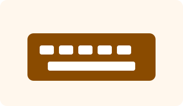

Acer Study Pro
Ноутбук для навчання, програмування та відеозустрічей.
Лабораторне заняття №18
Приклад оптимізації сайту: SEO-метатеги, легкі зображення, відкладене завантаження JavaScript, lazy-loading і аналіз реклами.
Зображення виконані як легкі SVG-файли, мають фіксовані розміри, атрибут alt і lazy-loading.
Ноутбук для навчання, програмування та відеозустрічей.
Монітор для комфортної роботи з кодом і дизайном.

Компактна клавіатура для швидкого набору тексту.
Швидкість появи найбільшого видимого елемента. Покращення: оптимізувати hero-блок і зображення.
Швидкість реакції на дії користувача. Покращення: мінімізувати JS і не блокувати головний потік.
Стабільність макета. Покращення: задавати width і height для зображень.
Час появи першого контенту. Покращення: скоротити критичний CSS і ресурси.
Час відповіді сервера. Покращення: кешування, CDN, якісний хостинг.
Натисніть кнопку у hero-блоці, щоб побачити короткий список виконаних оптимізацій.
| Вид реклами | Складність реалізації | Інтеграція | Вплив на продуктивність | Ефективність |
|---|---|---|---|---|
| Контекстна реклама | Середня | Google Ads, аналітика, теги | Може додавати сторонні скрипти | Швидке залучення аудиторії |
| Банерна реклама | Низька | Зображення або рекламна мережа | Залежить від ваги банера | Середня, можлива банерна сліпота |
| Соціальні мережі | Середня | Pixel, рекламний кабінет | Можливе навантаження від трекерів | Висока завдяки таргетингу |
| SEO-просування | Середня | Без обов'язкових сторонніх скриптів | Зазвичай позитивний вплив | Довгостроковий органічний трафік |